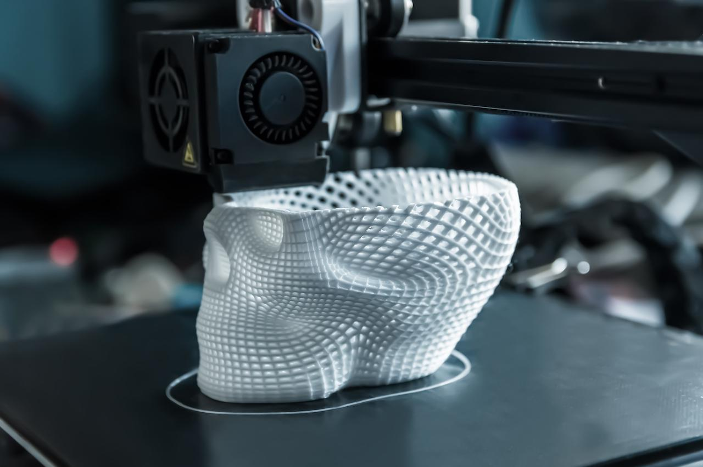
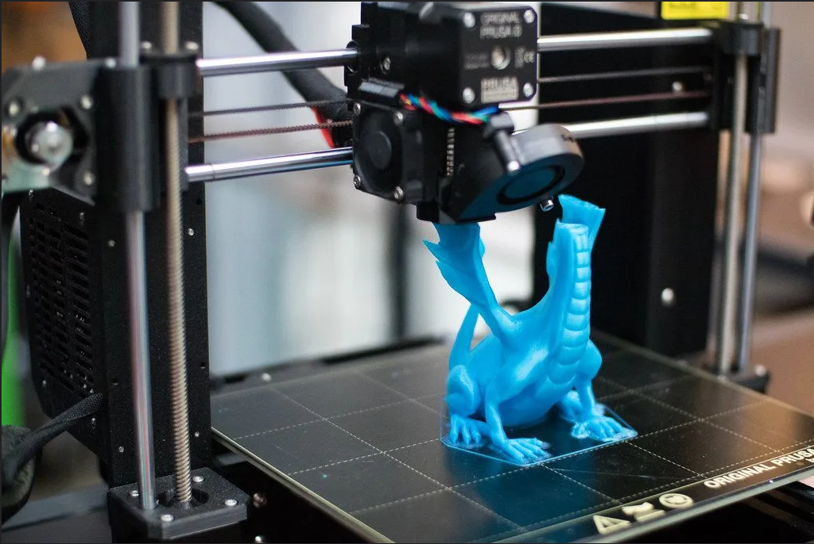
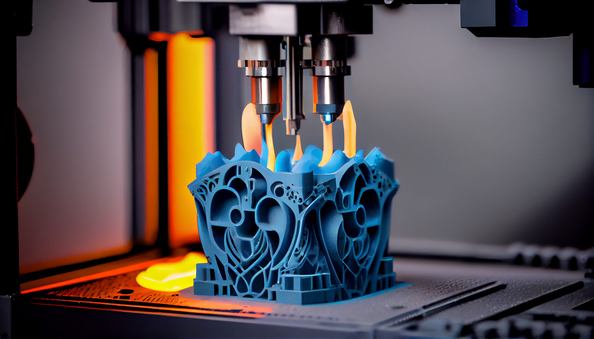
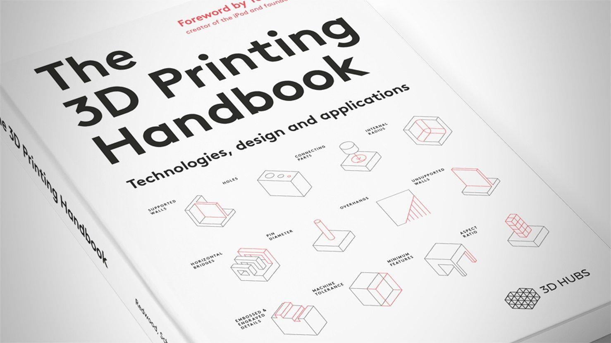
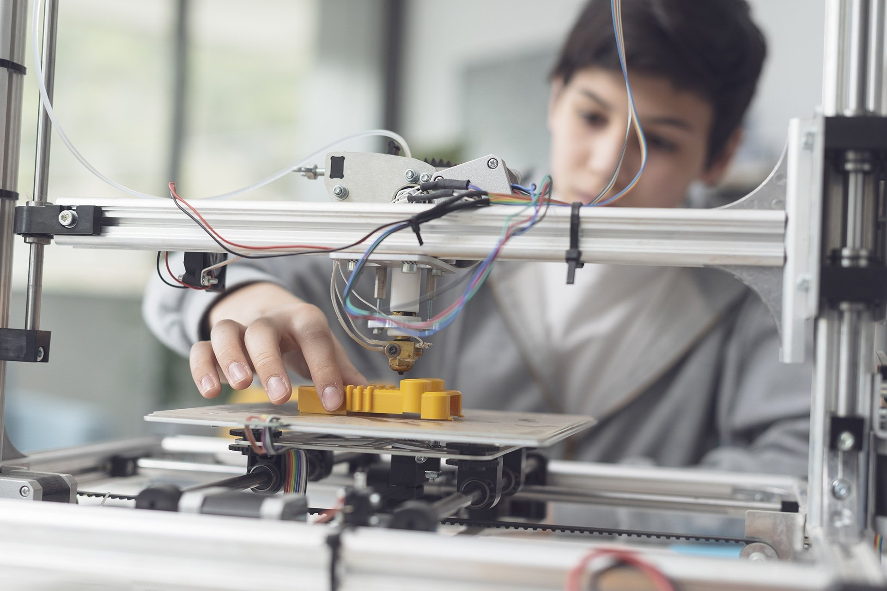

Ресурсы
Здесь вы найдете полезные ресурсы, которые помогут вам в изучении и работе с эластичными материалами для 3D-печати. Мы собрали ссылки на информативные сайты, образовательные платформы и другие полезные инструменты.



Полезные ссылки
- 3D Printing - Информация о 3D-печати.
- Материалы для 3D-печати - Источники о различных материалах.
- edX - Образовательные курсы по 3D-принтерам и материалам.
- Simplify3D - Flexible Filament Guide - Guide to flexible filaments [1](https://www.simplify3d.com/resources/materials-guide/flexible/).
- MatterHackers - Flexible Filament - Flexible filament options [2](https://www.matterhackers.com/store/c/flexible-filament?srsltid=AfmBOoqhff9WTsYGVN-hmNuXmABnFaDI7Banx07zNW6zH8fd2j75GffY).
Дополнительные ресурсы
Ознакомьтесь с дополнительными ресурсами, которые помогут вам углубить свои знания в области 3D-печати эластичными материалами:
- Статьи и блоги о новых технологиях и материалах.
- Форумы и сообщества для обмена опытом и знаниями.
- Видеоуроки и мастер-классы от экспертов в области 3D-печати.

